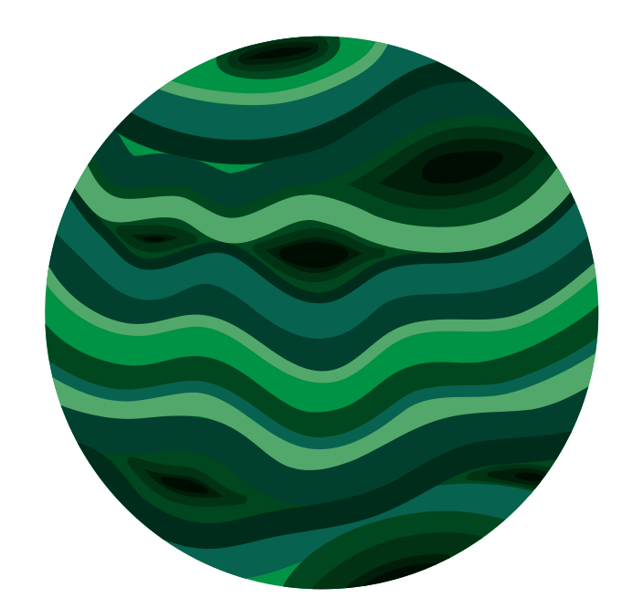

Ui'Zhaera is the fifth planet from Ae'Uuvoria, the world of Chaos, and by far the largest. It is the first of the outer planets, beyond the asteroid belt at 92–100 AU.
It is a gas giant with no solid surface. Methane and ammonia in its atmosphere color its banded clouds green.
Its axis is tipped 83°, so it rolls around its orbit almost on its side. Over its nearly 900-year year, each pole spends centuries in daylight, then centuries in darkness.
No life is known there.
Ui'Zhaera has more than a hundred moons. Ten of them are large enough to be clearly visible, and some orbit in retrograde, travelling the opposite way to the planet's spin.